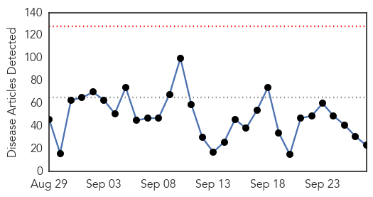
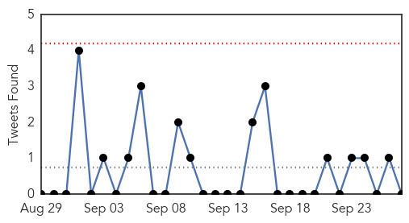

Unknown
30-Day Web Trend
0 alerts, 0 warnings

30-Day Twitter Trend
0 alerts, 0 warnings

Article Locations

Article Confidences
Top Articles:
- 0.997
- As Flu Season Ramps Up for October it’s Time to Get Vaccinated
- 0.992
- Breaking news on polio
- 0.955
- Shigella Outbreak Threatens Kansas City
- 0.937
- 150 New Cases Scare Kansas City
- 0.901
- Hong Kong travelers warned to use caution in Middle East
- 0.823
- SGGP English Edition- Vietnam increases Rabies prevention
- 0.813
- Study Offers New Clues on the History of the Smallpox Vaccine Virus
- 0.765
- New York Francophiles delight as Times Square turns French
- 0.761
- Syria talks at UN focus on role for Assad
- 0.760
- Health department urges vaccines after SD college student's death
- 0.749
- United Nations health agency urges donors to assist countries 'doing the heavy lifting'
- 0.707
- Health Department Investigates Meningococcal Death
- 0.674
- MUN water-drinking restrictions lifted except at Queen’s College
- 0.668
- Council Urges Poultry Farmers To Safeguard Their Farms Against Bird Flu
- 0.634
- Worthy Burger E. coli Outbreak Sickens 7 in Vermont
- 0.598
- NewsRadio KLBJ, 590AM and 99.7FM Austin Texas
- 0.581
- Shigella Infections 15 Times Higher Than Normal in Kansas City
- 0.570
- Four more addicted to adulterated toddy die in Telangana
- 0.557
- Millions of children’s lives saved as malaria deaths plunge: UN
- 0.553
- Scabies outbreak affects CMC employees
- 0.538
- Researchers discover contenders in molecular arms race of major plant disease
- 0.533
- AVA suspends commercial imports of dogs, cats from Malaysia
- 0.523
- Cervical cancer vaccine reactions stand out in Japan, news, Health News, AsiaOne YourHealth
Top Tweets:
-
No tweets found for Sep 27, 2015
Yellow Fever
30-Day Web Trend
30-Day Twitter Trend
Article Locations


Article Confidences

Top Articles:
-
No articles found for Sep 27, 2015
Top Tweets:
-
No tweets found for Sep 27, 2015